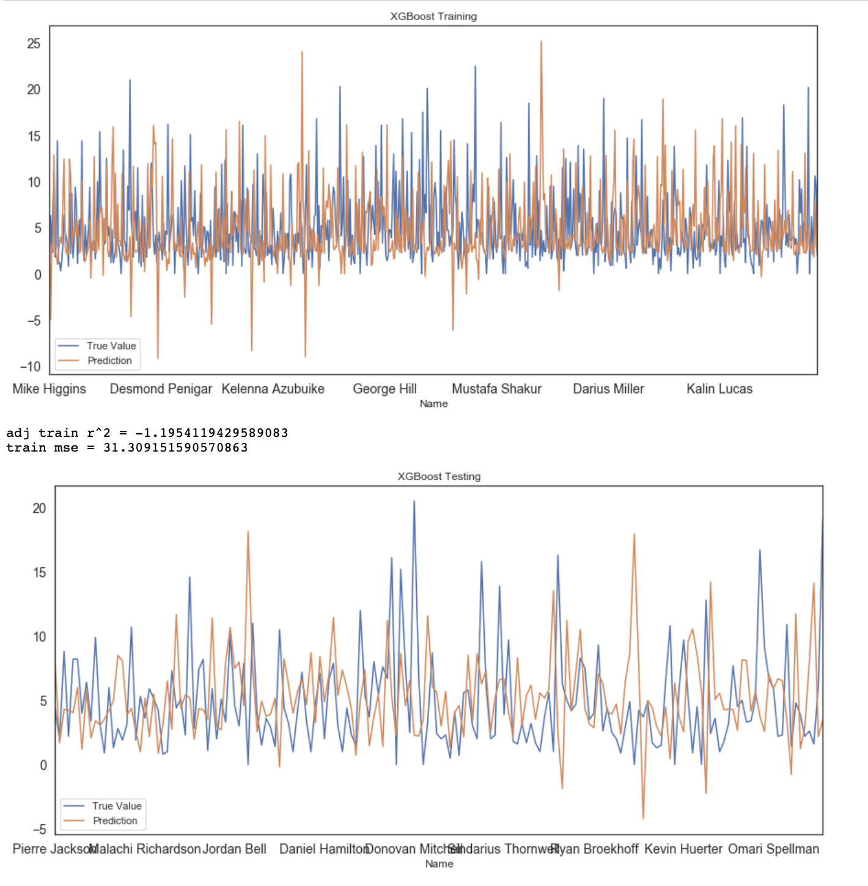

maanav garg
Hi my name is Maanav! I’m a Computer Science Major @MacU and in May 2020 I’ll be working as a Business Technology Analyst @Deloitte.
Thus far I’ve completed a 16-months internship @IBM as a Technical Analyst and Software Developer in Toronto, a term @MacU as a computing Research Assistant and a part-time internship @Mixem, as a Front-End Developer Intern. In the meantime, I’m working on building a predictive model of the upcoming NBA season, and learning the basics of UI/UX Design.
Aside from that, I’m currently the Vice President of Sponsorship @DeltaHacks (McMaster’s own Hackathon) and a FutureBlue Lead and Student Campus Ambassador @IBM.
For more, you can follow this link to see my resume, otherwise, I invite to check out my website!
technical projects
NBA Rookie Statistics
Mathematical machine learning model designed in Python
May 2019 - August 2019
summary
A mathematical machine learning model designed to predict the regular season averaging statistics for incoming rookies, by applying the trend of all the NBA player’s (1980 - 2018) college careers compared to their first season in the league, to the 2019 rookies college career statistics. I built this model using Python, and I’m currently working on a UI to display the calculated data.
data preparation
Before actually playing with and analyzing the data, I used BeautifulSoup to scrape all the required data, which included the following:
- Year-by-year in-game NBA statistics of every player from 1980 to 2019
- Year-by-year in-game College statistics of the every player accounted for above
- In-game College statistic of every in-coming NBA rookie for 2019
analysis
Following are the concepts that were applied to predict the 2019 in-game statistics of incoming rookies:
- Correlation Matrix
- Linear Regression
- Extra Trees
- Random Forest
- XGBoost
- Feed Forward Neural Network
- Differences
examples
The following are a few examples of the predicted statistics for the 2019-2020 Rookies:
| Players | Points | Assists | Rebounds | Steals | Blocks |
|---|---|---|---|---|---|
| Zion Williamson | 13.0 | 2.4 | 6.2 | 1.1 | 0.8 |
| Darius Garland | 8.1 | 1.9 | 2.9 | 0.6 | 0.2 |
| Coby White | 7.8 | 2.3 | 2.2 | 0.6 | 0.2 |
| Cam Reddish | 6.1 | 1.1 | 1.6 | 0.6 | 0.2 |
| Bol Bol | 9.4 | 1.1 | 4.9 | 0.5 | 0.8 |

Correlation Matrix

Linear Regression

Random Forest

Extra Trees
XGBoost
TPOT

Feed Forward Neural Network

Training Scatter Plot
Neural Network (Rookies)
personal feed
Fall 2017
MATH 1A03
Winter 2018
MATH 1AA3
Summer 2018
CO-OP
Fall 2018
CO-OP
Winter 2019
CO-OP
Summer 2019
CO-OP
Fall 2019
COMPSCI 2DM3
Winter 2020
COMPSCI 2FA3
Summer 2020
CO-OP
Fall 2020
COMPSCI 3DB3
Winter 2021
COMPSCI 3SH3
Summer 2021
CO-OP
Fall 2021
SEP 4EP3
Winter 2022
COMPSCI 4C03
Summer 2022
Graduation
Maanav Garg
Undergraduate Computer Science Major
IBM
Software Developer and Technical Analyst Intern
May 2018 - August 2019
summary
After my freshman year at McMaster, I had the opportunity to experience my first co-op, at IBM as a Software Developer and Technical Analyst Intern, over the course of 16-months. Although I won’t be getting into details here, please do feel free to reach out and ask me about any of the following more!
Our department's main focus revolves around maintaining and improving our client’s order processing and back-end trading platforms. Our main goals are to help them improve their efficiency, and increase their overall processing power.
Due to the sheer length of this internship, my first few months severely focused on training of all the technologies I’d be using during my tenure. During this I was accompanied by a mentor and an overlapping intern, who just spent over a year in my role. As well as, support from my Delivery Manager and Program Manager.
In the beginning, my role primarily consisted of software development using Python and Java, for associates who consulted with our clients - TD, National Bank, Desjardins and HSBC. However, as I progressed within my role, I was given projects and tasks that allowed me to work client-side, which involved meeting with new and pre-existing clients to discuss their needs and specifications for their upcoming project and then develop technical mock-ups and presentations to use to recommend solutions and provide strategic advice to our clients. Throughout the 16-months, I worked on 21 different projects, while handling 2 of my own clients, TD and National Bank, for 8-months and 6-months respectively.
On a weekly basis, my role consisted of the following:
- Designing and developing technical mocks-up, using IBM technologies
- Conducting quantitative and qualitative analysis to judge how to maximize clients use of technology
- Arranging and attending client-meetings to discuss future projects or current progress
- Assessed and resolved incoming problem tickets from our testing team
All in all, given that 16-months is longer than most internships, I was able to learn a lot more than I expected. The project-to-project culture assured I’d be learning and experiencing something new every few weeks, and I was able to work on not just my technical skills, but my soft skills as well.
techincal projects
McMaster University - Computing and Software
Dr. Christopher Anand - Research Assistant
January 2019 - April 2019
After my freshman year and during my co-op at IBM, I took upon a part-time research assistant role for 4 months under Dr. Christopher Anand from the Faculty of Computing and Software @McMaster, between January and April 2019. While assisting him in his research, I also managed and helped organize Dr. Anand’s OutReach initiative.
As an assistant to Dr. Anand, my role consisted of the following:
- Provided Bootstrap support as needed for all front-end projects
- Developing models and graphs based on provided quantitative values
- Worked alongside Dr.Anand’s senior research team, and assisted them with the development of basic components for their Blockchain related research
- Wrote specification documents after consulting a team of senior engineers
This role taught me the structure, and processes required to conduct computing and software research, as I was given a unique insight of Dr. Anand’s upcoming research projects, and took the opportunity to understand how everything actually functioned.
OutReach Initiative
The OutReach initiative is a program targeted towards young students in High School, that teaches them the basics and core principles of computer science and software development. As one of the developers, I built multiplayer games, using Elm and Haskell, that implemented game design principles that taught young students how to program. Alongside a team, I then taught over 200 kids how to program and design applications using these principles.
All in all, beyond learning technical skills, I was also able to build upon my soft skills of organization, time management and most importantly presentation. Overall, the entire experience was very enriching and fulfilling, as it allowed me to explore new languages and frameworks, while being able to spread my love of programming to the next generation!
Game that allows students to build shapes and play with their functionalities on the cartesian plane.
Demo of our ‘Car’ game - Teaches and shows the programming behind drawing a car.
Game developed that teaches students how the cartesian plane functions, with an implemented proximity measurer.
DeltaHacks VI 2020
Vice President Sponsorship
January 2019 - January 2020
At the end of my freshman year, I had the opportunity to join DeltaHacks V as their sole Website Designer, from June 2018 to January 2019, where I developed and built DeltaHacks.com. Due to my growth, and level of performance, I was offered the position of Vice President Sponsorship for DeltaHacks VI, a role which I entered in January 2019.
As VP of the Sponsorship portfolio, I managed a cross-functional 10-executive team that aimed to obtain funding from companies involved within the tech community.
Before I was able to begin reaching out to sponsors, I had to ensure we had all the needed resources. The following are a few of the major tasks I handled:
- I solely formulized a comprehensive design of our sponsorship packaging strategy.
- Recruited and interviewed our sponsorship-executive team.
- Created an invoice and contract template for future sponsors, to be used by my team.
- Coached and trained the team by explaining how to reach out to sponsors, how to maintain professionalism, how the sponsorship packages work, etc.
However, generally, my current role entails the following:
- Running and organizing weekly meetings with the Sponsorship team.
- Reaching out to, and handling loyal and highly reputed sponsors.
- Managing and coaching team-executives to ensure they meet their goals, deadlines, and assigned tasks.
Campus Ambassador Initiative
Beyond my role as VP Sponsorship, I spearheaded and launched Delta’s first ‘Campus Ambassador’ Initiative, which intends to create a Delta community at other North American universities and colleges. The campus ambassador program is our external leadership position, that allows students from other educational institutions to represent DeltaHacks and involve us in their tech communities. I designed this initiative with the intentions to bring in a more diverse pool of students for DeltaHacks VI and attract communities from campuses with a low percentage of applicants.
All in all, my experience at DeltaHacks has been phenomenal, and it's one of the few organizations I see myself being apart off, till I graduate. I’ve been able to learn a lot through my multiple roles at Delta, especially how to manage and direct a team student executives, which entailed learning how to delegate and coach the team respectively and effectively.
If you’re interested in partnering or being apart of DeltaHacks in anyway, please don’t hesitate to reach out to me at maanavgarg@icloud.com or sponsorship@deltahacks.com!
IBM
FutureBlue Site Lead
January 2019 - August 2019
McMaster Consulting Association
Consultant - Technology
September 2018 - January 2019
IBM
Student Campus Ambassador
September 2019 - April 2020